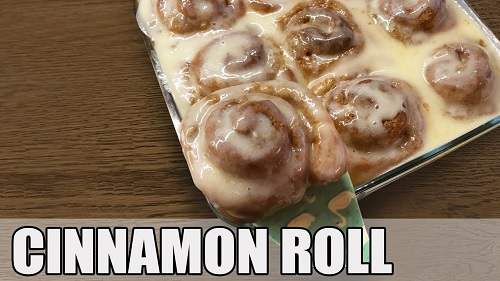

(Bardak ölçeği 200ml - 180 derece önden ısıtılmış fırında fansız 25-30 dk pişecek.)
MALZEMELER:
Hamuru
- 200 ml (1 su bardağı) krema
- 330 gr (3 silme su bardağı) un
- 40 gr (2 yemek kaşığı) tozşeker
- 1 orta boy yumurta
- 6 gr (1 dolu tatlı kaşığı) instant maya
- 1/4 çay kaşığı tuz
İç dolgusu
- 60 gr (2 yemek kaşığı) oda sıcaklığında tereyağı
- 100 gr (1/2 su bardağı) esmer şeker
- 1 tatlı kaşığı toz tarçın
Glaze
- 100 gr krem peynir oda sıcaklığında (labne de olur)
- 100 gr (1/2 su bardağı) pudra şekeri
- 1 paket şekerli vanilin
- 35 ml (2 yemek kaşığı) süt
NOT:
- Tatlıyı çiğden rulo yaptığınız haliyle streçleyip dondurabilirsiniz. Pişirmeden evvel oda
sıcaklığında çözülmesini ve mayalanmasını beklemek gerekli, sabırlı olun soğuk ürünler geç
mayalanır, sonra videodaki şekilde pişirebilirsiniz.
- Eğer az porsiyona uygun pişirmek için ufak kap bulamam diyorsanız pişirilmiş haliyle de streçleyip
buzluğa atabilirsiniz. Tüketmeden önce fırında ısıtırsınız. Yalnız pişmiş ürünü soslamadan
dondurmanızı öneririm, sos çözülürken sulanıyor çünkü.